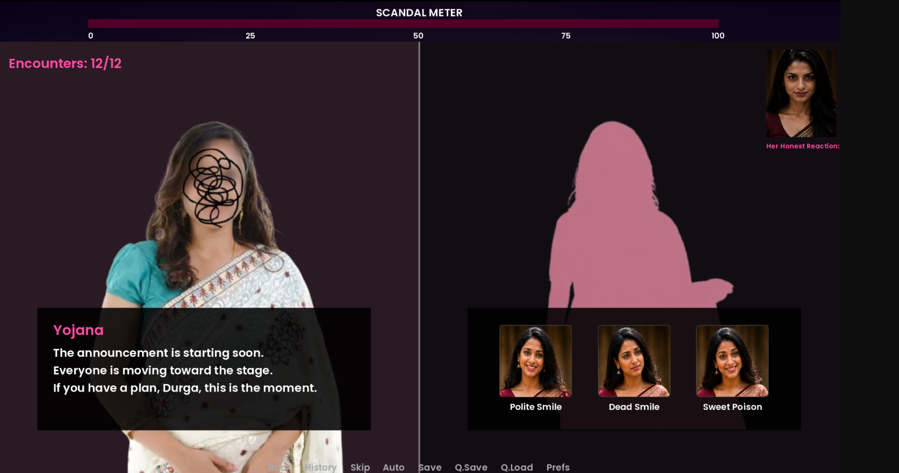
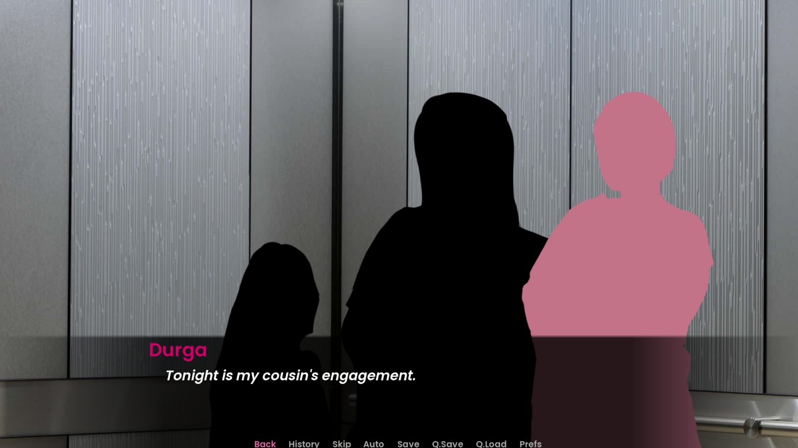

Overview
Smile, Beti is a single-player visual novel created for the 2026 GDAI PixelSakhi Game Jam. The player navigates a traditional family function through conversations and social pressure, choosing how to respond while managing a visible Scandal Meter.
“Good girls don’t make scenes, do you?”
Core Interaction
The prototype turns social performance into a game system. Dialogue encounters ask the player to balance compliance, self-expression and the consequences of being judged by the people around them.
Choice-driven dialogue
Conversation choices shape how an encounter plays out instead of relying on movement or combat.
Scandal Meter
A persistent meter makes social judgment visible and turns “making a scene” into readable gameplay pressure.
Expression choices
The gameplay screen includes selectable reactions such as “Polite Smile,” “Dead Smile,” and “Sweet Poison,” reinforcing the theme through UI.
Encounter structure
The interface tracks encounters across the event, giving the short prototype a clear progression through successive social situations.
Gameplay & UI


What the Prototype Demonstrates
The project is useful in the portfolio because it is not only a written concept: it is a submitted, downloadable build. It demonstrates how a social theme can be translated into a compact loop through dialogue, visible pressure and expressive UI rather than traditional action mechanics.